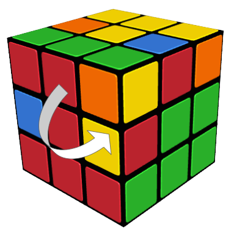
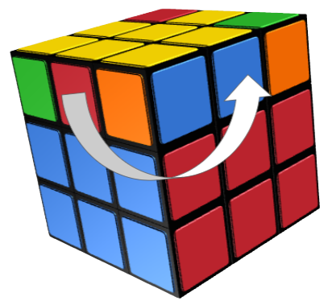

The 3x3x3 rubiks cube (the original rubiks cube) has many, many ways to solve it. Over here are listed the major algorithms for the most popular methods, the Beginners (LBL) method and the CFOP method. Only major algorithms are listed here, for complete tutorials please visit our Youtube channel, PI Cubing. If you don't have a 3x3x3 cube at home, you can use the above simulator to practice. Pressing the small reverse button on the bottom left corner return the simulated cube to its original state. It is recommended to open this simulator on a laptop for large size and easy controls.
Beginners (LBL) method:
The algorithm for inserting an edge peice on the top layer into its correct position on the right is:
U R U R' U' F' U' F U
The algorithm for inserting an edge peice on the top layer into its correct position on the left is:
U' L' U' L U F U' F' U
The algorithm to switch 2 edge pieces after forming the yellow cross is:
R U R' U R U2 R
The last algortihm for positioning the corner pieces correctly is:
U R U' L' U R' U' L
CFOP Method
A PDF of all important 2-look OLL and 2-look PLL algorithms is attached below:
Download File
With these major algorithms, and our amazing tutorial videos, we hope you have enjoyed solving the 3x3x3 cube!